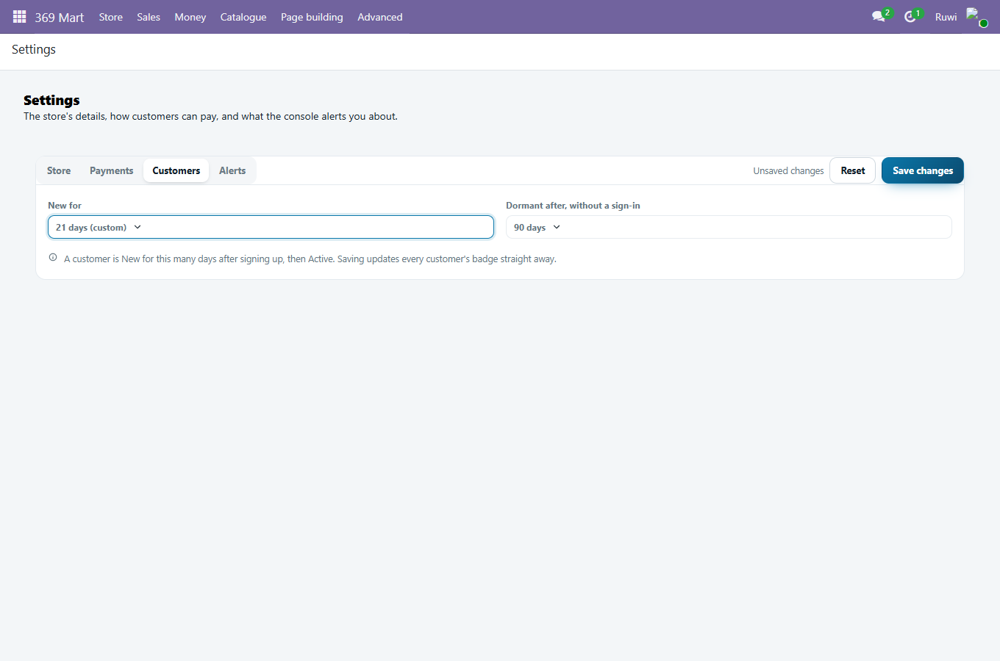
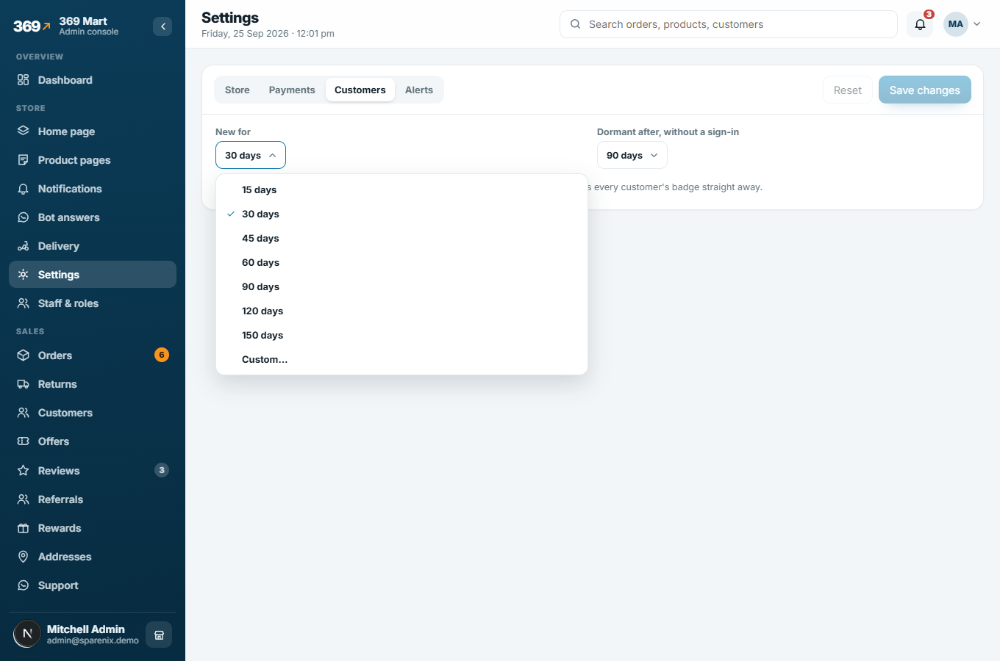
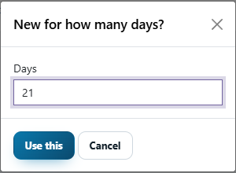
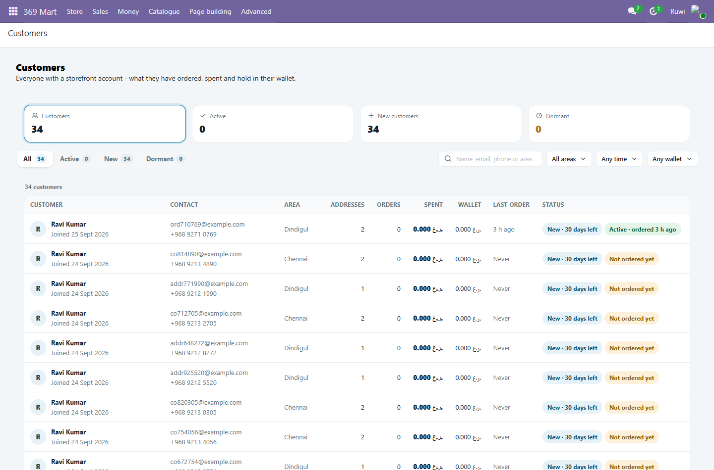
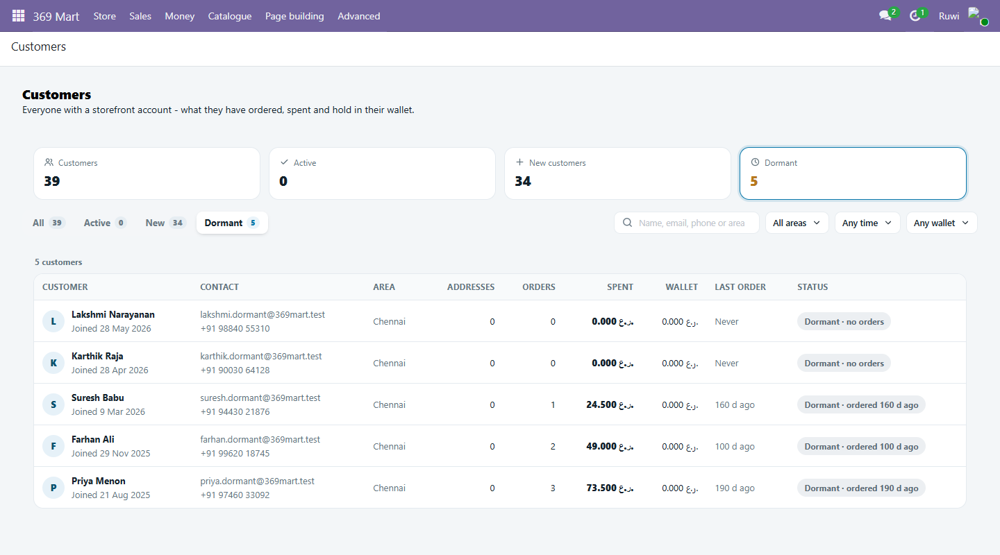
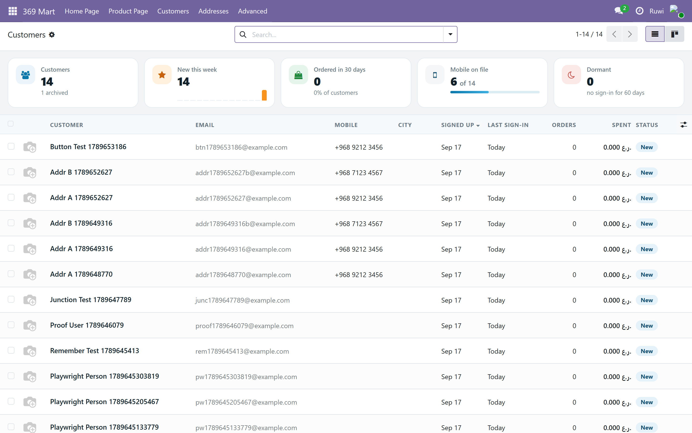
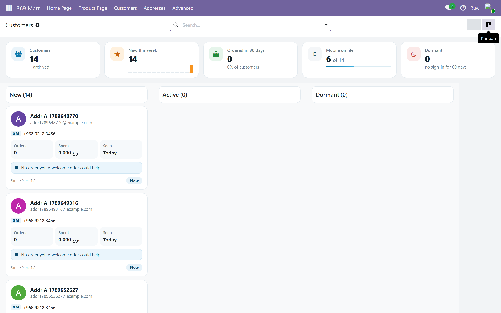
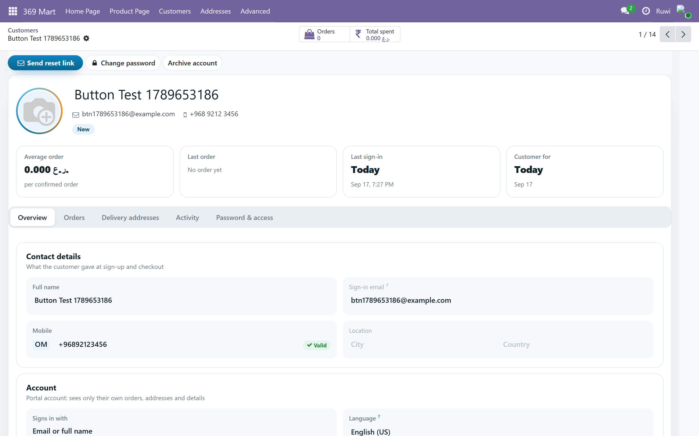
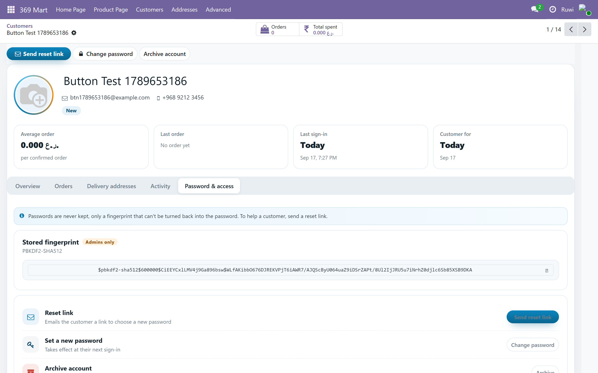

369 Mart Sign In lets shoppers create their own customer account in the shop app and sign in with their email or full name and a password. With the WhatsApp Bridge module installed, they can also sign in or sign up with their mobile number and a six-digit code sent on WhatsApp.
Staff see everyone who has signed up on the Customers desk: what each person ordered and spent, and a status — New, Active, Dormant or Archived — that tells you who to welcome and who to win back. Every account made this way is a customer-only login: it sees its own orders, addresses and details, and can never open the backend.
1. Customer signs upName, email and password, or mobile and a WhatsApp code
→
2. Shows as NewFor the number of days you choose
→
3. ActiveSigns in and orders as usual
→
4. DormantNo sign-in for a while: time to call
Before you start: Sign-up works the moment the module is installed; there is nothing to switch on. An administrator may want to set how long a customer counts as New and when they turn Dormant (Part 1). For "Forgot password" and reset links to send email, the backend needs an outgoing mail server. Codes on WhatsApp need the 369 Mart: WhatsApp Bridge module.
Words you'll see
Word
What it means
Customer account
A login made from the shop app. It sees only its own orders, addresses and details.
Status
New, Active, Dormant or Archived — worked out from the sign-up date and the last sign-in.
Sign-in code
A six-digit number sent on WhatsApp that proves the mobile belongs to the person typing it.
Proven number
A mobile that has been confirmed with a code. A typed-in number alone is not proven.
Fingerprint
What is stored instead of a password. It cannot be turned back into the password.
Staff note
A note about a customer that only staff can read.
How the manual is arranged
Part 1 – Setting Up covers where the screens live and the two status settings. Part 2 – Everyday Use is the Customers desk, the customer panel, the full profile, and what the customer sees when signing up or in. Part 3 – Keeping It Secure & In Order covers passwords, codes, archiving and who can do what.
Part 1 — Setting Up
Done once by an administrator. The defaults (New for 30 days, Dormant after 90) suit most shops; skip to Part 2 if you are happy with them.
1Where everything lives
Open 369 Mart from the main menu:
Sales → Customers — the Customers desk, used every day.
Store → Settings → Customers — how long a customer is New and when they turn Dormant. This screen belongs to the 369 Mart Payments & Wallet module.
Advanced → Customers (all views) — the same customers as a list, a board and a full profile form, with search, filters and grouping.
The Customers desk is shown to the Website designer and Administrator (Settings); Customers (all views) to the Administrator (Settings) only. The user list under the main menu's Settings → Users & Companies → Users also gains a Mobile column, because a mobile can now sign people in.
Good to know: Installing the module turns on free sign-up: anyone may create an account from the shop app. An administrator can change this in the main Settings under Customer Account.
2Choose when a customer is New and when Dormant
Open Store → Settings and pick the Customers tab:
New for — a customer is New for this many days after signing up, then Active. Default 30 days.
Dormant after, without a sign-in — a customer who has not signed in for this many days is Dormant. Default 90 days.
Each list offers 15, 30, 45, 60, 90, 120 or 150 days, or Custom…, which asks for any whole number of days (1 or more) in a small window; press Use this. A saved custom number shows as, for example, "21 days (custom)". Press Save changes (or Reset to undo).

Figure 1 — Store → Settings → Customers: New for set to "21 days (custom)", Dormant after, without a sign-in at 90 days, and "Unsaved changes" beside Reset and Save changes.

Figure 2 — The same Customers tab in the staff console, with the New for list open: 15 to 150 days and Custom….

Figure 3 — Custom… opens "New for how many days?": type the number and press Use this.
Good to know: Saving updates every customer's badge straight away. After that, statuses refresh each time a customer signs in and once a day (the scheduled job "369 Mart: refresh customer status").
Part 2 — Everyday Use
Where staff work: the Customers desk and the customer's profile.
1The Customers desk
Open Sales → Customers. Four tiles at the top count the whole shop — Customers, Active, New customers and Dormant — and clicking one switches to that tab. Searching and filtering never change the tiles; the line above the rows says how many match.
All / Active / New / Dormant — the tabs, each with its count.
Search — by name, email, phone or area.
Area, Joined (Any time, This month, Last 3 months, This year), Wallet (Any wallet, Has a balance) and Tag (shown once tags exist) — narrow the list.
Sort — Newest first, Oldest first, Name A → Z, Name Z → A, or Recently active.
Each row shows the customer, contact, area, orders, amount spent, wallet balance, last order and status badges. An Addresses count appears when the 369 Mart Delivery Addresses module is installed. Fifty rows show at a time; press Show more for the rest. The desk refreshes itself every two minutes.

Figure 4 — The Customers desk: the four tiles, the tabs and filters, and rows whose badges read "New · 30 days left" with "Not ordered yet" or "Active · ordered 3 h ago".
2Reading the badges
Badge
What it tells you
New · 12 days left
Signed up recently; days until they count as Active. "New · last day" on the final day.
Not ordered yet
A New customer who has not placed an order.
Active · ordered 2 h ago
When they last placed an order ("no orders yet" if none).
Dormant · ordered 160 d ago
Quiet customer, and when they last ordered ("no orders" if never).
"Placed" is what counts: a cash-on-delivery order counts as soon as it is placed, before anyone confirms it; an unpaid online order or a cancelled one does not.

Figure 5 — The Dormant tab: five quiet customers, with badges such as "Dormant · no orders" and "Dormant · ordered 100 d ago".
3The customer panel
Click a row to open the customer panel on the right:
Call and WhatsApp — reach the customer without copying the number (greyed out when there is no number).
Tags — press + Add tag, type, and pick a tag or + Create a new one; press × on a tag to remove it. Saved at once.
Orders, Spent, Wallet, Last order — the customer's figures.
Staff notes — write a note and press Add (up to 1,000 characters). You can edit or delete only your own notes.
Recent orders — the latest orders, with date, payment method and where they went.
Open full profile — opens everything about the customer; Close returns to the list.
Other 369 Mart modules add more to the panel when installed: the customer's Addresses with + Add address (Delivery Addresses), and a risk line, a Cash on delivery switch and + Goodwill credit (Orders).
Important: Staff notes and tags are for the team only. A customer never sees them.
4All views: list, board and profile
Advanced → Customers (all views) shows the same customers with a numbers strip on top: Customers (and how many archived), New customers with a 14-day sign-up chart, Ordered in 30 days, Mobile on file and Dormant. Click a tile to filter. Switch between the list and the board with the buttons at the top right.

Figure 6 — The list: the numbers strip, then one row per customer with email, mobile, city, signed up, last sign-in, orders, spent and a New status badge.
The board groups cards under New, Active and Dormant. A New customer with no order gets the hint "No order yet. A welcome offer could help."; a Dormant one gets "Quiet for a long while. Call or message."

Figure 7 — The board: cards in the New column with orders, spent and "Seen", and the welcome-offer hint.
5The full profile
The profile shows the customer's name, email, mobile and status, the Orders and Total spent buttons (each opens their orders), and four figures: Average order, Last order, Last sign-in and Customer for. Its tabs are:
Overview — Full name, Sign-in email, Mobile (with a green Valid tick once checked), Location, Language, Signed up and Last sign-in.
Orders — every order with date, total and status.
Delivery addresses — the customer's saved addresses.
Activity — sign-up, recent sign-ins and orders, newest first.
Password & access — reset link, new password and archiving (Part 3).

Figure 8 — A customer profile: Send reset link, Change password and Archive account at the top, the four figures, and the Overview tab with a mobile marked Valid.
Tip: A mobile typed on the profile is checked for the customer's country and saved in full international form. A landline or a number of the wrong length is refused.
6What the customer sees
Sign up — full name (2 characters or more), email and a password of at least 8 characters; a mobile is optional but must be valid if given. An email already in use is told to sign in instead.
Sign in — email or full name, and the password. If two accounts share the name, the customer is asked to use their email.
Forgot password — always answers that it worked, so nobody can learn whether an email has an account; the link arrives only if an outgoing mail server is set up.
Mobile and code — the customer types their number and receives a six-digit code on WhatsApp. A number with no account is asked to sign up; a number that already has one is asked to sign in.
Add your mobile number — a customer whose number has never been proven is asked to prove one before carrying on.
Watch out: If an account's number was only ever typed and never proven, the right code is not enough: the customer must also enter their password once. This stops someone with that phone taking over an account they did not make.
Part 3 — Keeping It Secure & In Order
1Passwords and access
On the profile, open Password & access (Administrator (Settings) only):
Stored fingerprint — what is kept instead of the password. Marked Admins only.
Send reset link — emails the customer a link to choose a new password. The safe way to help.
Change password — sets a new password, which takes effect at their next sign-in.
Archive / Restore — archiving blocks sign-in and keeps their orders; restoring lets them sign in again.

Figure 9 — Password & access: the note that passwords are never kept, the stored fingerprint (Admins only), and the Reset link, Set a new password and Archive account rows.
2Sign-in codes
Codes are kept only as a fingerprint, so even someone who can read the backend cannot use one. Their limits:
Lasts 10 minutes — then the customer must ask for a new one.
5 tries per code — then "Too many tries. Send a new code."
3 codes per number per hour (and 10 per device or connection) — then "Too many codes. Try again in N minutes."
A new code cancels the old one. Old codes are cleared daily by the job "369 Mart: clear old sign-in codes".
Staff with the Website designer right can also sign in to the staff console with their own mobile: they need the code and their password. A number that belongs to no staff member gets the same reply but no code, so the page cannot be used to find out who works here.
3Who can do what
Role
What they can do
Customer (shop app)
Sign up, sign in, and see only their own orders, addresses and details. Never the backend.
Website designer
The Customers desk: search, open the panel, tags and staff notes; the Customers tab in Store → Settings.
Administrator (Settings)
All of the above, plus Customers (all views), the Password & access tab, Change password and the stored fingerprint.
Important: Customer details are personal data. Use the panel's Call and WhatsApp buttons for shop business only, and keep opinions out of staff notes — they record your name and the time.
Status reference — customers
State
Meaning
How to change it
New
Signed up within the New for days.
Changes by itself to Active when the days run out. Adjust New for in Store → Settings → Customers.
Active
Past the New days and has signed in within the Dormant after days.
Automatic.
Dormant
No sign-in for the Dormant after days (counted from sign-up if they never signed in).
Back to Active as soon as they sign in. Adjust Dormant after in settings.
Archived
Sign-in blocked; orders kept.
Restore account on the profile.
Quick tips
Use the Dormant tab as a call list; the board shows who has no mobile.
Tag customers ("VIP", "Bulk buyer") to filter them later with Tag.
To help a locked-out customer, send a reset link rather than setting a password.
The tiles always count the whole shop, whatever you search.
Archive, don't delete: the customer's orders stay intact.
Saving New for or Dormant after updates every badge at once.
WhatsApp codes need the WhatsApp Bridge module; email sign-in always works.
If something goes wrong
What you see
What to do
A customer never gets the reset email
The backend has no outgoing mail server. Ask your administrator to set one up, then press Send reset link again.
"We can't send codes right now. Sign in with email, or try again later."
The WhatsApp Bridge module is not installed or cannot send. The customer can still sign in with email or name.
"Too many codes. Try again in N minutes."
Three codes went to that number within the hour. Ask the customer to wait.
"Several accounts use this name. Sign in with your email."
Two customers share the name. They must sign in with their email.
"Email or password is incorrect."
Check the spelling, or send a reset link from Password & access.
A mobile won't save on the profile
It is not a valid mobile for the customer's country, or it is a landline. Check the number and the country on Overview.
Badges look out of date
They refresh at sign-in and daily. Saving the Customers tab in Store → Settings recomputes them all at once.